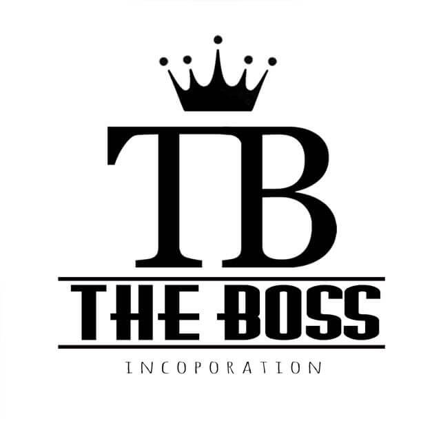

h3post_title 
Você já teve alguma dúvida sobre como se escreve uma palavra simples, que vive sendo usada no seu cotidiano? Fique tranquilo, pois isso é completamente normal. A Língua Portuguesa possui uma infinidade de termos e é humanamente impossível se recordar de todos eles Quando isso acontece, é hora de abrir o dicionário ou dar um Google – escritores, jornalistas e revisores fazem isso praticamente todos os dias. Então, vamos lá. Você sabe como se escreve teste?